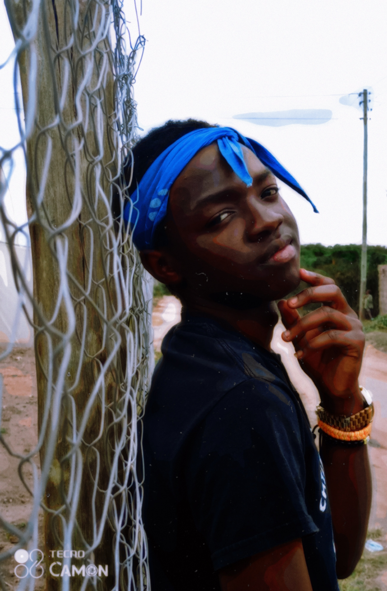
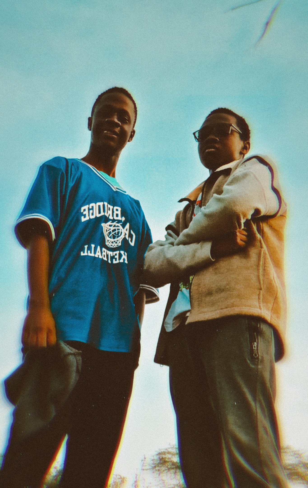
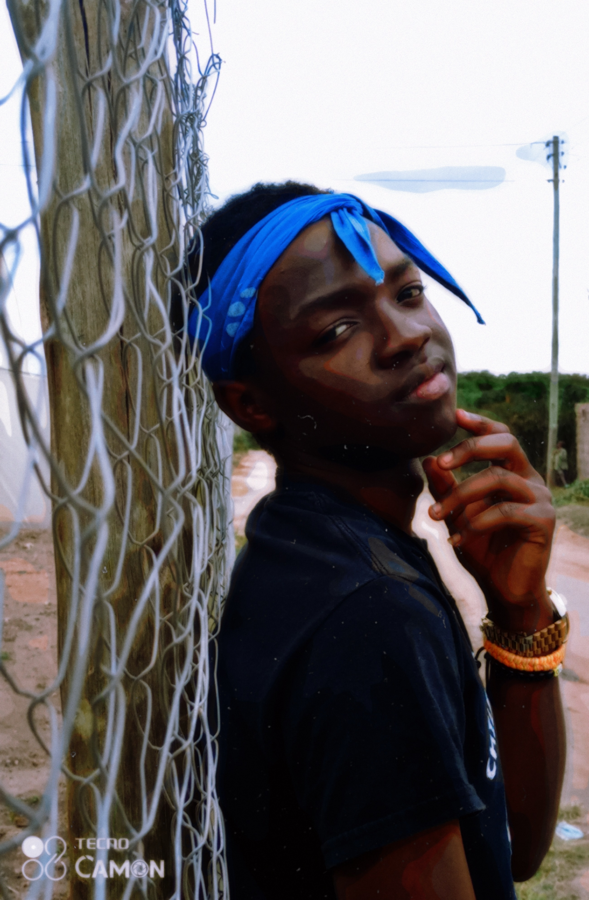
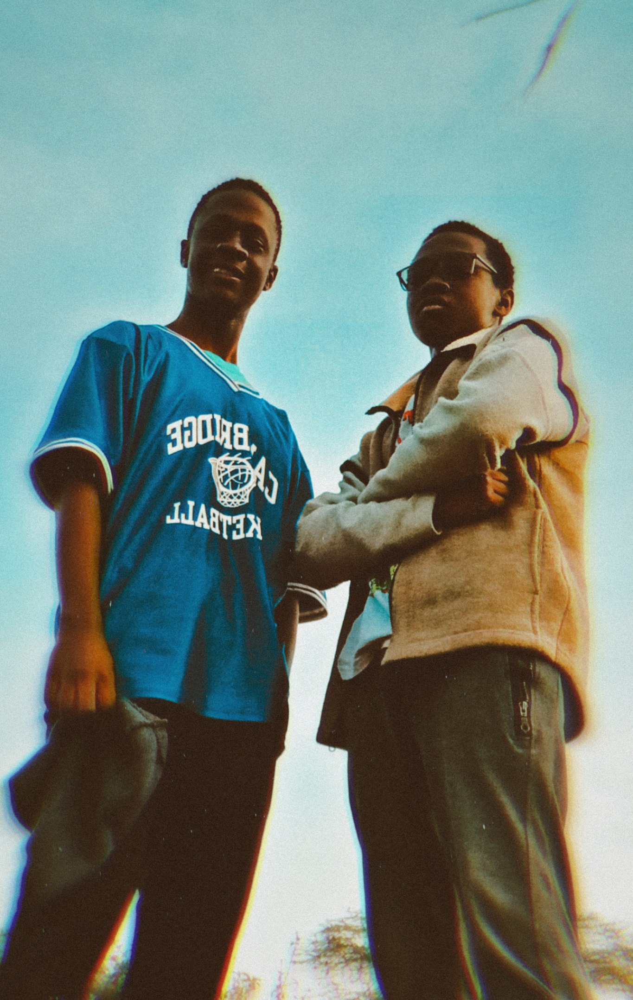
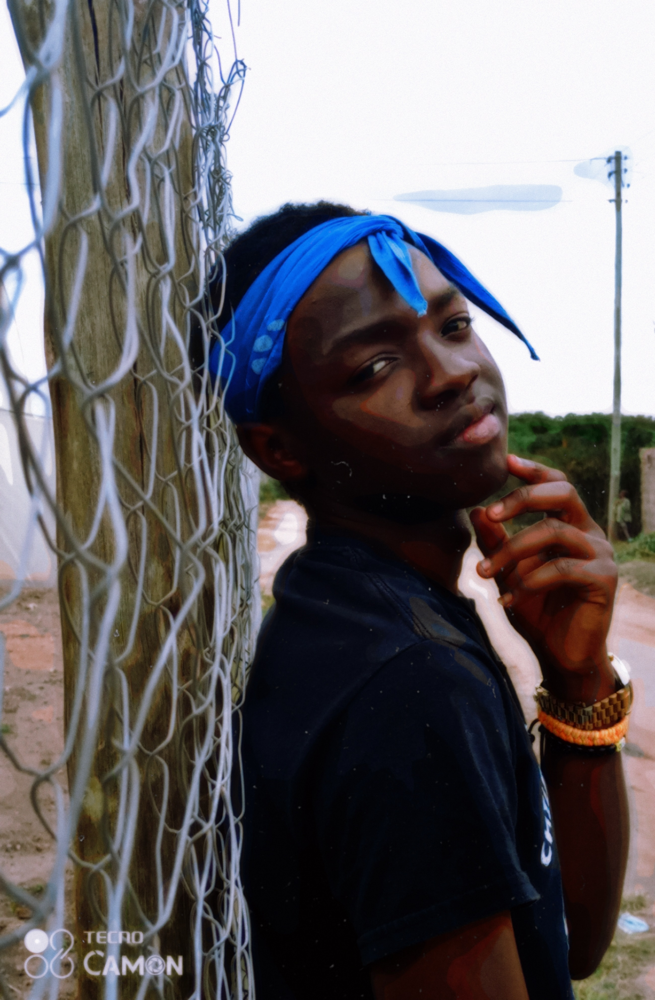
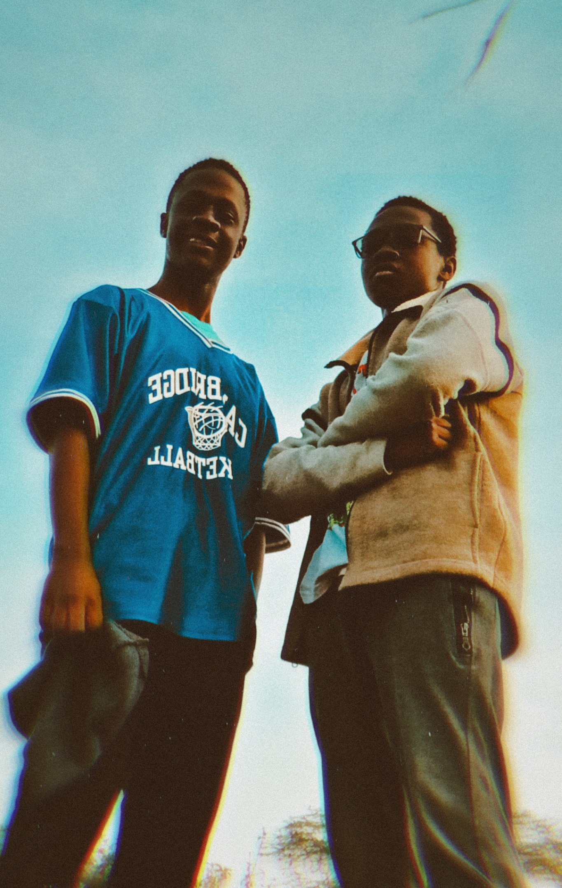

 
 
As the name speaks for itself, the type of picture editing tends to make appearance of a photo be a little bit aged, maybe by:black and white, paper appearance and other different effects. For example, observe the picturres below...
 
Take note that the camera which took this photos was a 21st century smartphone.
Even though the last photo is not black and white, the graphics show that it appears to be taken during the 80s or 90s.